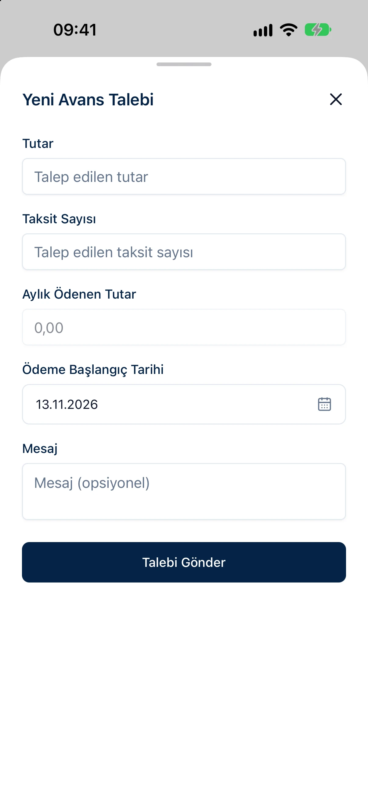
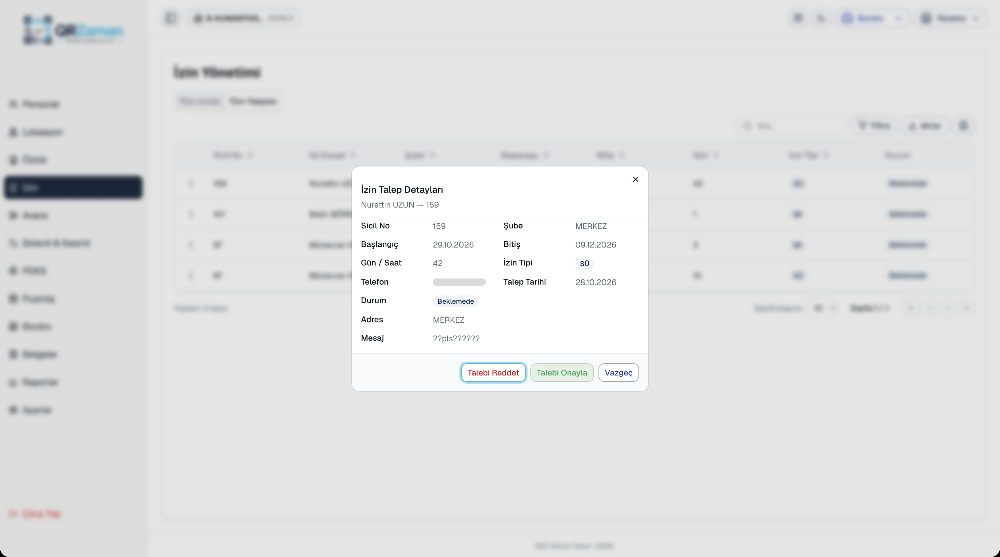

Farklı sektörlerden işletmeler QR Zaman kullanıyor
[Logo] [Logo] [Logo] [Logo] [Logo][000+]
Şirket
[0.000+]
Personel
[00.000]
Günlük QR okutma
[00]
İl
Tek platform
Giriş-çıkıştan bordroya,
Giriş-çıkıştan bordroya,
uçtan uca personel yönetimi.
Ayrı ayrı programlar ve Excel tabloları yerine tek bir sistem. Verileriniz bir modülden diğerine kendiliğinden akar.
İnsan Kaynakları
Bordro & Raporlama
CRM
Platform
QR Kodlu PDKS
Doğru yerde,
Doğru yerde,
doğru kayıt.
Kart ve parmak izi okuyucuya gerek yok, sahte kayda da yer yok. Donanım satın almadan, personelin kendi telefonuyla güvenilir devam takibi.
- Her okutmada telefon konumu kaydedilir
- Sahte GPS uygulamaları tespit edilir ve engellenir
- Hesap tek cihaza eşlenir, başkası yerine okutulamaz
- Vardiya, gece mesaisi ve mola süreleri otomatik hesaplanır


Puantaj
Ayın tamamı
Ayın tamamı
tek çizelgede.
Çalışılan saatler, hafta tatilleri, izinler ve fazla mesailer gün gün işaretlenir. PDKS kayıtları tek tıkla aktarılır, toplu giriş ile yüzlerce personel saniyeler içinde güncellenir.
Puantaj ve Mesai →
Bordro
Bordro,
Bordro,
tek tıkla hazır.
Güncel SGK ve vergi parametreleriyle net ücret, kesintiler ve toplam işveren maliyeti otomatik hesaplanır. Eklenti, kesinti ve avans taksitleri bordroya kendiliğinden yansır.
Bordro Hesaplama →
İzin & Avans
Talebin birkaç
Talebin birkaç
dokunuş uzakta.
Personel izin ve avans talebini uygulamadan gönderir, durumunu takip eder. Yönetici panelden veya mobilden gerekçesiyle onaylar ya da reddeder. İzin bakiyesi ve avans taksitleri otomatik hesaplanır.


Çoklu Şirket & Şube
Tüm şirketleriniz,
Tüm şirketleriniz,
tek panelde.
Grup → Şirket → Şube → Bölüm hiyerarşisi. Her kullanıcıya grup, şirket veya şube bazında ayrı yetki alanı verin; personelin hangi ekranları göreceğini siz belirleyin.
Grup Holding
Şirket A · 3 şube
İstanbul Şubesi · Fabrika, Depo


Okut. Kaydet. Bordro hazır.
4 adımda kağıtsız personel takibi.
- 01
Şirketinizi kurun
Şirket, şube ve bölümlerinizi tanımlayın, personelinizi Excel'den tek seferde aktarın.
- 02
QR kodları asın
Her lokasyon için QR kod üretin, A4 afiş olarak yazdırıp girişe asın.
- 03
Personel okutsun
Personel mobil uygulamayla QR'ı okutur; konum ve cihaz anında doğrulanır.
- 04
Bordro hazır
Kayıtlar puantaja aktarılır, bordro tek tıkla hesaplanır.
Sıkça sorulan sorular
QR Zaman için özel bir donanım gerekiyor mu?
Hayır. Panelden ürettiğiniz QR kodu yazdırıp asmanız yeterli. Personel kendi telefonundaki QR Zaman uygulamasıyla okutur.
Personel başkasının yerine giriş yapabilir mi?
Hayır. Hesap tek cihaza eşlenir, okutma anında telefonun konumu alınır ve sahte konum uygulamaları tespit edilir.
Bordro hesaplaması güncel mevzuata uygun mu?
Vergi dilimleri, SGK oranları, asgari ücret istisnaları, kıdem-ihbar tanımları ve resmî tatiller yıl bazında tutulur ve yeni yıla tek tıkla aktarılır.
Birden fazla şirket ve şubeyi yönetebilir miyim?
Evet. Grup, şirket, şube ve bölüm hiyerarşisiyle çalışır; her kullanıcıya ayrı yetki alanı verilir.
Mevcut personel listemi nasıl aktarırım?
Hazır Excel şablonunu indirip doldurun ve tek seferde içe aktarın; her satır için sonuç raporu alırsınız.